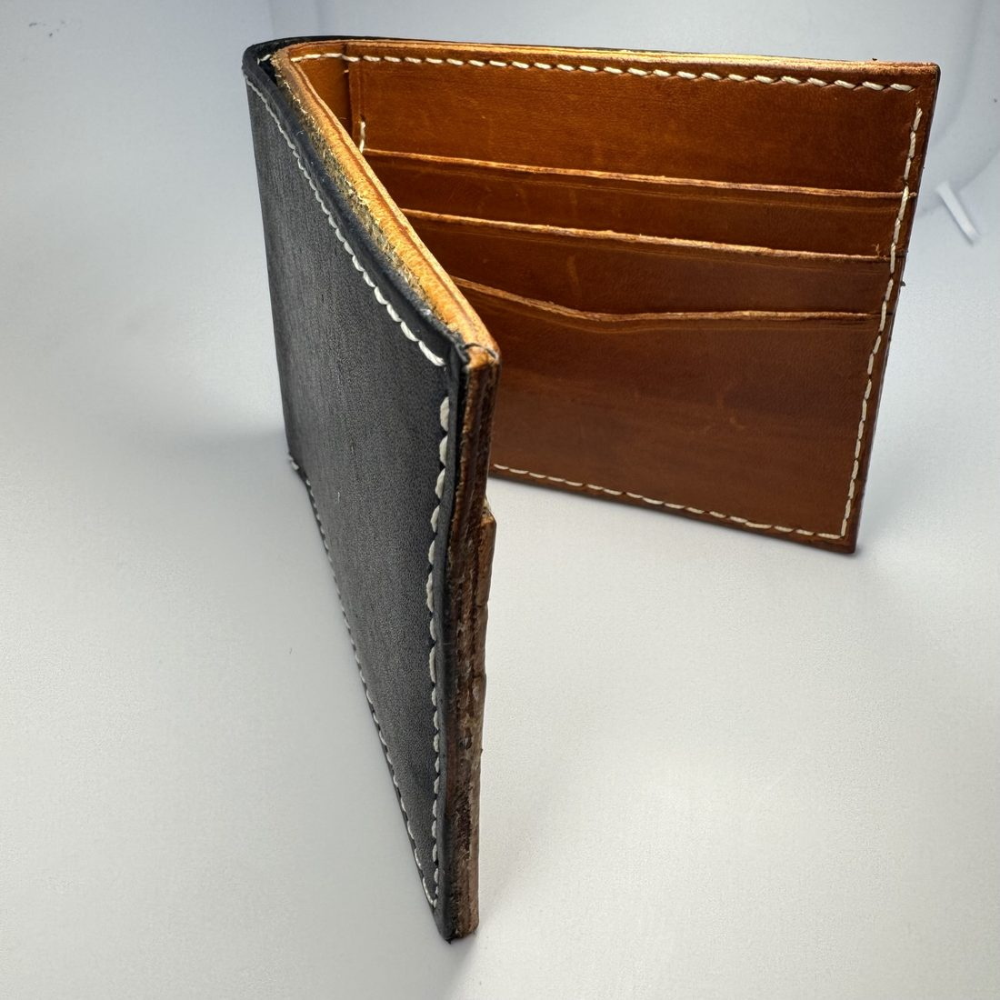
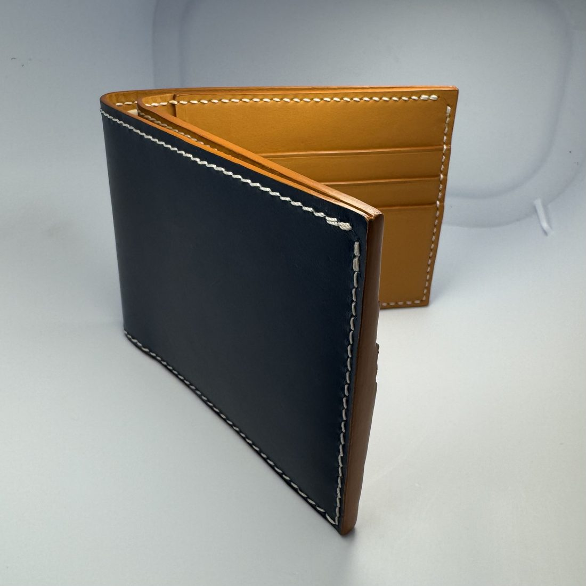
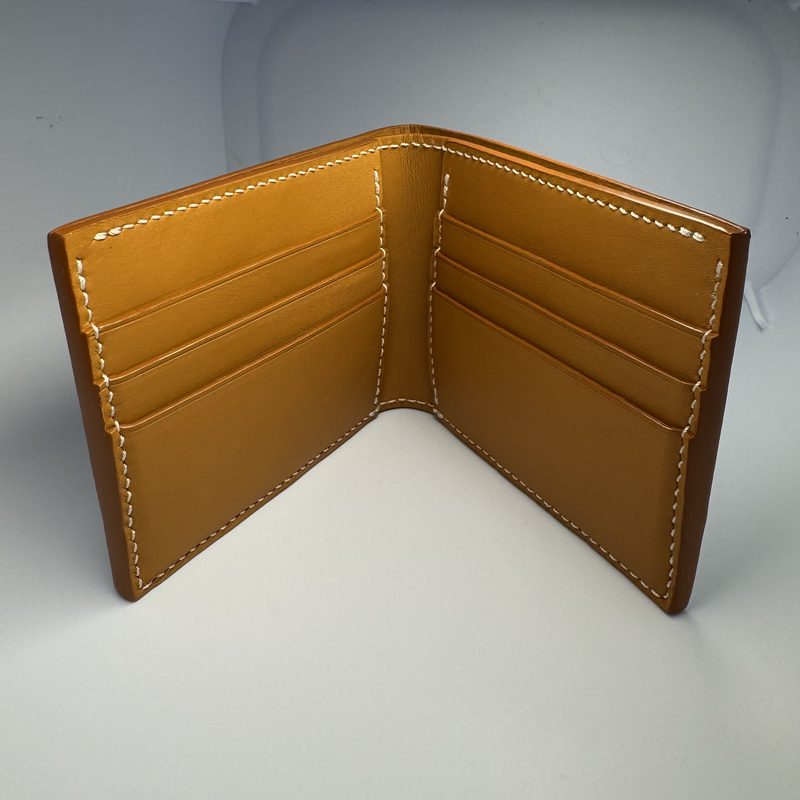
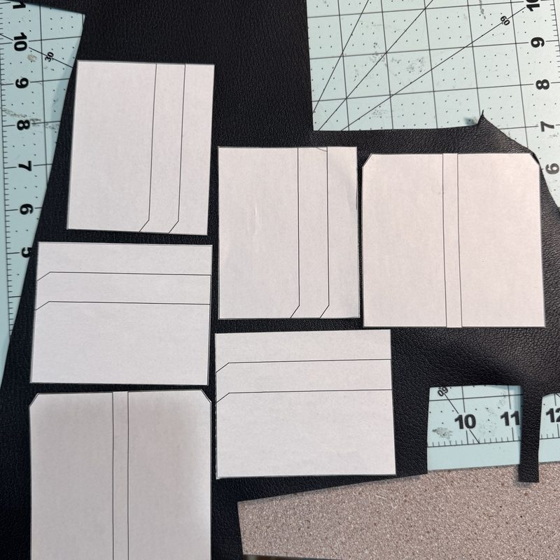
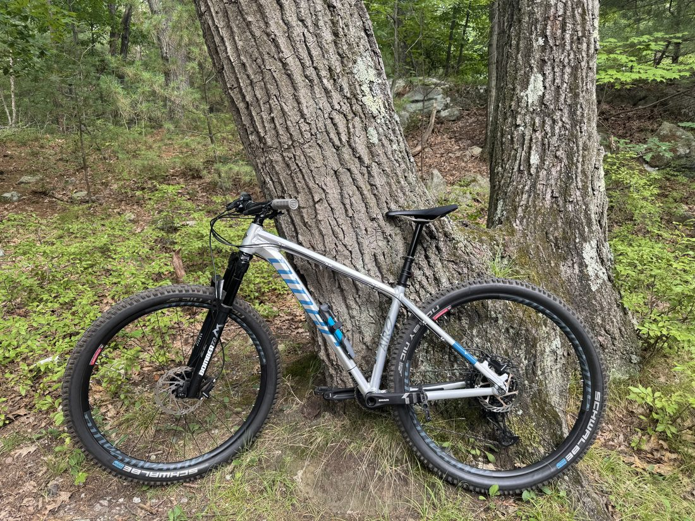
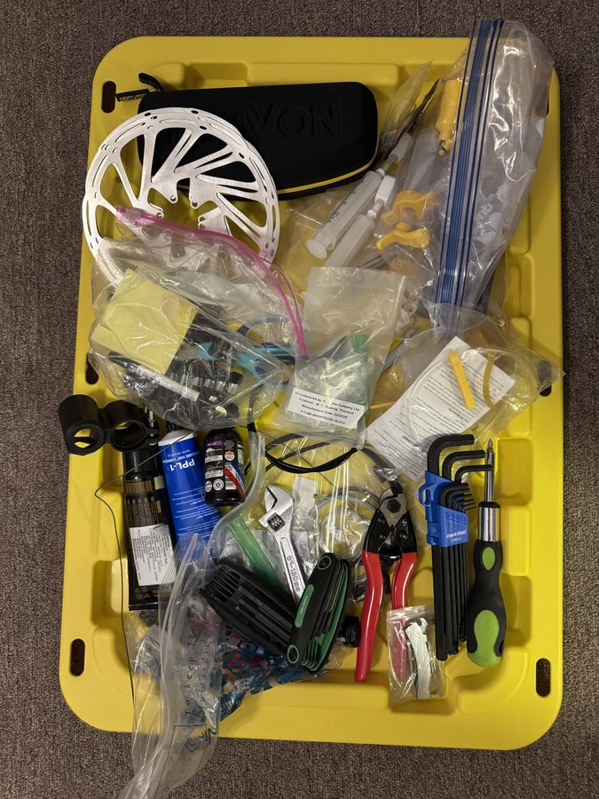

Hobbies
What I like to do on a rainy Sunday afternoon
Leatherworking
My favorite of them all. The intense concentration it takes to get everything perfect puts me in the zone and clears my mind of any distractions. Ask me anything about leatherworking and be ready for 30 minutes of random leatherworking facts you never asked for!
The same wallet, a year apart




I draw my own patterns in Inkscape and prototype them in paper first, checking the measurements before anything gets cut. You'll find me on YouTube constantly learning new ways to get cleaner stitching, cuts, and edges.
Bikes
I ride a 2024 Niner AIR 9, and half the parts are upgraded from stock: brakes bled and upgraded, a dropper post fitted, headset and drivetrain adjusted, and the cassette upgraded. As annoying as it is when something breaks, I enjoy spending my Sunday afternoon tweaking parts to get rid of the smallest squeak.


Also, with less to show for them
Gear trading
Hunting marketplace listings for anything from bike parts to furniture. I will spend 2 hours searching just to save 10 dollars on a nightstand.
Knife sharpening
Sharpening with whetstones and restoring knives. My most recent is my grandfather's rusted deba all sharpened, sanded and polished to nearly brand new, without losing the rustic feel.
Taiwanese food
1. Danzai noodles 2. Taiwanese pork chop rice
Tufts SEDS
The L1 certification rocket with Tufts SEDS — designed, cut, assembled and flown.
Currently hunting for a Herman Miller Aeron under $100 that isn't a scam and a pair of skis to try skiing this winter.